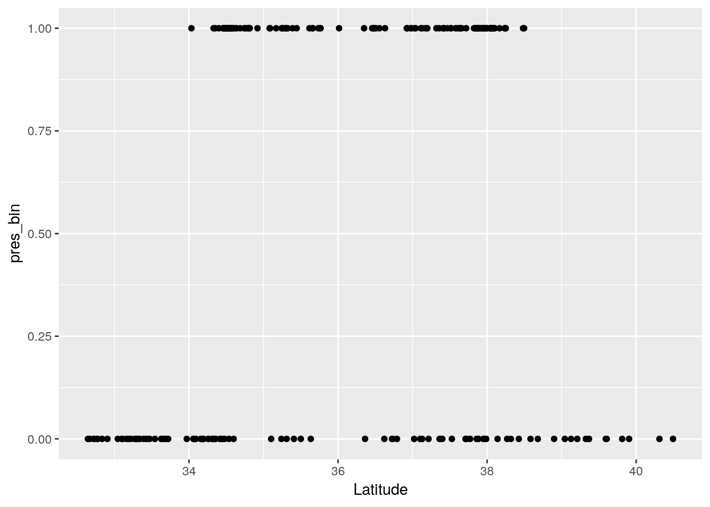
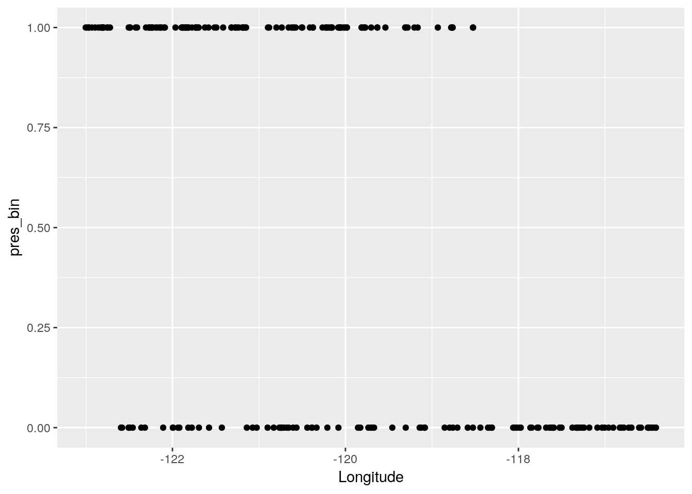
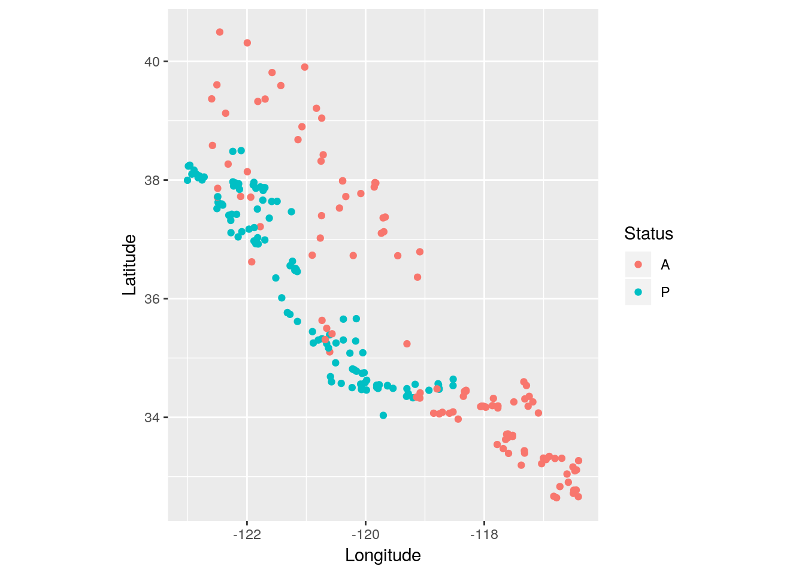
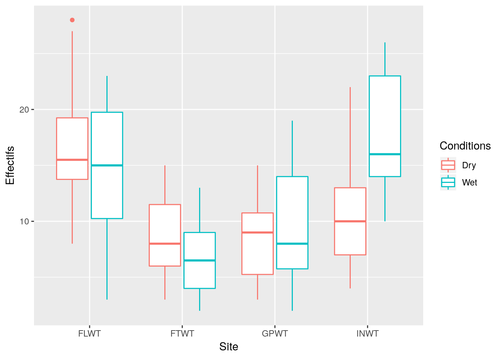
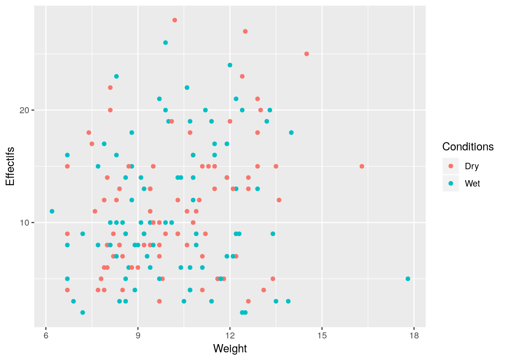
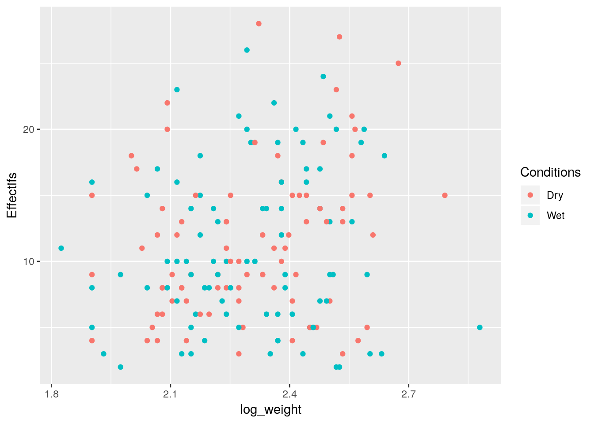
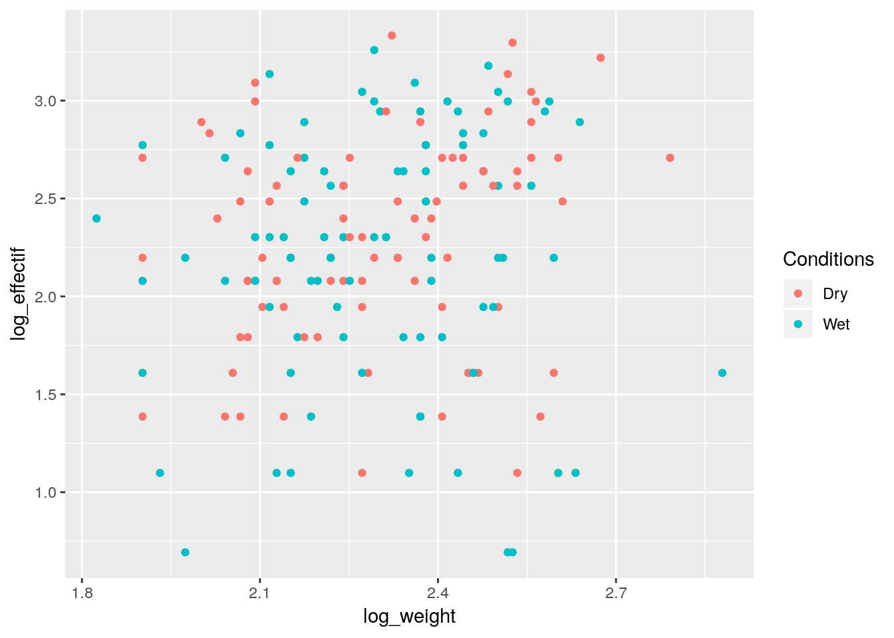

Les auteurs ont collecté dans la littérature et dans les archives des muséums, des informations sur la présence ou l’absence de grenouilles sauvages dans 237 points d’eau de Californie. Pour chacun des sites, on dispose donc de sa position (longitude + latitude) de la source de l’information (Museum, Literature, PersCom ou Field Note) ainsi que de l’information sur la présence/absence de grenouilles.\ On cherche à caractériser l’aire de répartition de cette espèce en étudiant comment varie la probabilité de trouver des grenouilles dans un point d’eau en fonction de la latitude et de la longitude. On pourra aussi se demander si les différentes sources d’information documentent les mêmes " types " de points d’eau. \ Les données se trouvent dans le fichier Grenouille.don \ Les colonnes sont : Source Source2 presabs(Présence/Absence) latitude longitude \
Les données sont disponibles sur grenouille
Grenouille <- read.table(file.path('data', 'Grenouille.don'), sep="",header=TRUE)
n <- nrow(Grenouille)
summary(Grenouille)## Source Source2 Status Latitude Longitude
## FieldNote : 10 MVZ :59 A:113 Min. :32.64 Min. :-123.0
## Literature: 7 Perscom:31 P:123 1st Qu.:34.39 1st Qu.:-121.8
## Museum :188 LACM :26 Median :35.47 Median :-120.4
## Perscom : 31 CAS-SU :15 Mean :35.92 Mean :-120.1
## SDNHM :15 3rd Qu.:37.72 3rd Qu.:-118.7
## UMMZ :12 Max. :40.49 Max. :-116.4
## (Other):78Grenouille %>% mutate(pres_bin = ifelse(Status=='A', 0, 1)) -> Grenouille
p <- ggplot(data=Grenouille, aes(x=Latitude, y=pres_bin)) + geom_point()
p
p <- ggplot(data=Grenouille, aes(x=Longitude, y=pres_bin)) + geom_point()
p
p <- ggplot(data=Grenouille, aes(y = Latitude, x = Longitude, col = Status)) + geom_point() + coord_fixed()
p
\[ Y_k \overset{i.i.d}{\sim}\mathcal{B}(p_k), \quad logit(p_k) = \beta_0 + \beta_1 x^{(1)}_k \]
glm1 <- glm(Status ~ Latitude, family = binomial, data=Grenouille)
glm0 <- glm(Status ~ 1, family = binomial, data=Grenouille)
summary(glm1)##
## Call:
## glm(formula = Status ~ Latitude, family = binomial, data = Grenouille)
##
## Deviance Residuals:
## Min 1Q Median 3Q Max
## -1.635 -1.078 0.951 1.096 1.308
##
## Coefficients:
## Estimate Std. Error z value Pr(>|z|)
## (Intercept) -7.32756 2.52734 -2.899 0.00374 **
## Latitude 0.20645 0.07034 2.935 0.00334 **
## ---
## Signif. codes: 0 '***' 0.001 '**' 0.01 '*' 0.05 '.' 0.1 ' ' 1
##
## (Dispersion parameter for binomial family taken to be 1)
##
## Null deviance: 326.74 on 235 degrees of freedom
## Residual deviance: 317.81 on 234 degrees of freedom
## AIC: 321.81
##
## Number of Fisher Scoring iterations: 4anova(glm0, glm1, test='Chisq')## Analysis of Deviance Table
##
## Model 1: Status ~ 1
## Model 2: Status ~ Latitude
## Resid. Df Resid. Dev Df Deviance Pr(>Chi)
## 1 235 326.74
## 2 234 317.81 1 8.9292 0.002806 **
## ---
## Signif. codes: 0 '***' 0.001 '**' 0.01 '*' 0.05 '.' 0.1 ' ' 1\[ Y_{k} \sim \mathcal{B}(p_k), \quad logit(p_k) = \beta_0 + \beta_1 x^{(1)}_k + \beta_2 x^{(2)}_k. \]
glm12 <- glm(Status~Latitude+Longitude, family=binomial, data=Grenouille)
anova(glm1, glm12, test='Chisq')## Analysis of Deviance Table
##
## Model 1: Status ~ Latitude
## Model 2: Status ~ Latitude + Longitude
## Resid. Df Resid. Dev Df Deviance Pr(>Chi)
## 1 234 317.81
## 2 233 146.81 1 171 < 2.2e-16 ***
## ---
## Signif. codes: 0 '***' 0.001 '**' 0.01 '*' 0.05 '.' 0.1 ' ' 1glm2 <- glm(Status ~ Longitude, family=binomial, data=Grenouille)
anova(glm0, glm2)## Analysis of Deviance Table
##
## Model 1: Status ~ 1
## Model 2: Status ~ Longitude
## Resid. Df Resid. Dev Df Deviance
## 1 235 326.74
## 2 234 246.85 1 79.892anova(glm0, glm1)## Analysis of Deviance Table
##
## Model 1: Status ~ 1
## Model 2: Status ~ Latitude
## Resid. Df Resid. Dev Df Deviance
## 1 235 326.74
## 2 234 317.81 1 8.9292summary(glm12)##
## Call:
## glm(formula = Status ~ Latitude + Longitude, family = binomial,
## data = Grenouille)
##
## Deviance Residuals:
## Min 1Q Median 3Q Max
## -2.6435 -0.3011 0.2393 0.4404 2.0575
##
## Coefficients:
## Estimate Std. Error z value Pr(>|z|)
## (Intercept) -265.0912 32.1226 -8.252 < 2e-16 ***
## Latitude -2.1157 0.3171 -6.671 2.53e-11 ***
## Longitude -2.8382 0.3523 -8.056 7.87e-16 ***
## ---
## Signif. codes: 0 '***' 0.001 '**' 0.01 '*' 0.05 '.' 0.1 ' ' 1
##
## (Dispersion parameter for binomial family taken to be 1)
##
## Null deviance: 326.74 on 235 degrees of freedom
## Residual deviance: 146.81 on 233 degrees of freedom
## AIC: 152.81
##
## Number of Fisher Scoring iterations: 6anova(glm12)## Analysis of Deviance Table
##
## Model: binomial, link: logit
##
## Response: Status
##
## Terms added sequentially (first to last)
##
##
## Df Deviance Resid. Df Resid. Dev
## NULL 235 326.74
## Latitude 1 8.929 234 317.81
## Longitude 1 171.002 233 146.81Anova(glm12)## Analysis of Deviance Table (Type II tests)
##
## Response: Status
## LR Chisq Df Pr(>Chisq)
## Latitude 100.04 1 < 2.2e-16 ***
## Longitude 171.00 1 < 2.2e-16 ***
## ---
## Signif. codes: 0 '***' 0.001 '**' 0.01 '*' 0.05 '.' 0.1 ' ' 1Les données sont disponibles sur fourmis
D’autre part, étant donnée la relative petite taille de la forêt d’Inselberg () seuls 20 points d’échantillonnage ont été sélectionnés pour ce site.
Enfin les conditions de recueil (humides ou sèches, variable ) ont été notées pour tester leur influence sur la présence des fourmis.
Fourmis <- read.table(file.path('data','Fourmis.txt'),header=T, sep=',')
Fourmis %>% group_by(Site, Conditions) %>% summarise(n())## # A tibble: 8 x 3
## # Groups: Site [?]
## Site Conditions `n()`
## <fct> <fct> <int>
## 1 FLWT Dry 24
## 2 FLWT Wet 26
## 3 FTWT Dry 24
## 4 FTWT Wet 26
## 5 GPWT Dry 22
## 6 GPWT Wet 28
## 7 INWT Dry 13
## 8 INWT Wet 7ggplot(data= Fourmis, aes(x=Site, y=Effectifs, col= Conditions)) + geom_boxplot() 
ggplot(data= Fourmis, aes(x=Weight, y=Effectifs, col= Conditions)) + geom_point() 
Fourmis %>% mutate(log_weight= log(Weight)) %>% ggplot(aes(x=log_weight, y=Effectifs, col= Conditions)) + geom_point() 
Fourmis %>% mutate(log_weight= log(Weight), log_effectif = log(Effectifs)) %>% ggplot(aes(x=log_weight, y=log_effectif, col= Conditions)) + geom_point() 
On souhaite étudier les variables qui influencent potentiellement le nombre d’espèces de fourmis présentes dans le milieu. A l’aide de graphiques bien choisis, proposer des variables candidates.
Que peut-on dire du plan d’expérience ?
On modélise des comptages par des lois de Poisson
\[Y_{ijk} \overset{i.i.d}{\sim} \mathcal{P}(\lambda_{ij} E_{ijk})\]
glmInt <- glm(Effectifs~Site*Conditions,offset=log(Weight),
family="poisson", data=Fourmis )
summary(glmInt)##
## Call:
## glm(formula = Effectifs ~ Site * Conditions, family = "poisson",
## data = Fourmis, offset = log(Weight))
##
## Deviance Residuals:
## Min 1Q Median 3Q Max
## -3.2267 -0.9268 -0.1522 0.8252 3.6257
##
## Coefficients:
## Estimate Std. Error z value Pr(>|z|)
## (Intercept) 0.49531 0.04969 9.968 < 2e-16 ***
## SiteFTWT -0.55200 0.08425 -6.552 5.69e-11 ***
## SiteGPWT -0.74225 0.08857 -8.380 < 2e-16 ***
## SiteINWT -0.38293 0.09727 -3.937 8.26e-05 ***
## ConditionsWet -0.02802 0.07132 -0.393 0.69438
## SiteFTWT:ConditionsWet -0.37426 0.12476 -3.000 0.00270 **
## SiteGPWT:ConditionsWet 0.16746 0.11880 1.410 0.15866
## SiteINWT:ConditionsWet 0.47387 0.14148 3.349 0.00081 ***
## ---
## Signif. codes: 0 '***' 0.001 '**' 0.01 '*' 0.05 '.' 0.1 ' ' 1
##
## (Dispersion parameter for poisson family taken to be 1)
##
## Null deviance: 534.13 on 169 degrees of freedom
## Residual deviance: 301.41 on 162 degrees of freedom
## AIC: 1017.2
##
## Number of Fisher Scoring iterations: 4anova(glmInt)## Analysis of Deviance Table
##
## Model: poisson, link: log
##
## Response: Effectifs
##
## Terms added sequentially (first to last)
##
##
## Df Deviance Resid. Df Resid. Dev
## NULL 169 534.13
## Site 3 201.731 166 332.40
## Conditions 1 0.000 165 332.40
## Site:Conditions 3 30.994 162 301.41Anova(glmInt)## Analysis of Deviance Table (Type II tests)
##
## Response: Effectifs
## LR Chisq Df Pr(>Chisq)
## Site 200.543 3 < 2.2e-16 ***
## Conditions 0.000 1 0.9883
## Site:Conditions 30.994 3 8.526e-07 ***
## ---
## Signif. codes: 0 '***' 0.001 '**' 0.01 '*' 0.05 '.' 0.1 ' ' 1library(emmeans)## NOTE: As of emmeans versions > 1.2.3,
## The 'cld' function will be deprecated in favor of 'CLD'.
## You may use 'cld' only if you have package:multcomp attached.emmeans(glmInt,pairwise~Site*Conditions,adjust="bonferroni")## $emmeans
## Site Conditions emmean SE df asymp.LCL asymp.UCL
## FLWT Dry 0.49530878 0.04969040 Inf 0.39791739 0.59270016
## FTWT Dry -0.05669534 0.06804135 Inf -0.19005395 0.07666326
## GPWT Dry -0.24694408 0.07332322 Inf -0.39065495 -0.10323321
## INWT Dry 0.11237809 0.08362226 Inf -0.05151852 0.27627470
## FLWT Wet 0.46728482 0.05116443 Inf 0.36700437 0.56756526
## FTWT Wet -0.45897816 0.07647000 Inf -0.60885661 -0.30909971
## GPWT Wet -0.10751148 0.06041102 Inf -0.22591491 0.01089194
## INWT Wet 0.55822786 0.08908707 Inf 0.38362041 0.73283532
##
## Results are given on the log (not the response) scale.
## Confidence level used: 0.95
##
## $contrasts
## contrast estimate SE df z.ratio p.value
## FLWT,Dry - FTWT,Dry 0.55200412 0.08425415 Inf 6.552 <.0001
## FLWT,Dry - GPWT,Dry 0.74225285 0.08857443 Inf 8.380 <.0001
## FLWT,Dry - INWT,Dry 0.38293069 0.09727187 Inf 3.937 0.0023
## FLWT,Dry - FLWT,Wet 0.02802396 0.07132275 Inf 0.393 1.0000
## FLWT,Dry - FTWT,Wet 0.95428693 0.09119647 Inf 10.464 <.0001
## FLWT,Dry - GPWT,Wet 0.60282026 0.07822165 Inf 7.707 <.0001
## FLWT,Dry - INWT,Wet -0.06291909 0.10200805 Inf -0.617 1.0000
## FTWT,Dry - GPWT,Dry 0.19024874 0.10002960 Inf 1.902 1.0000
## FTWT,Dry - INWT,Dry -0.16907343 0.10780681 Inf -1.568 1.0000
## FTWT,Dry - FLWT,Wet -0.52398016 0.08513181 Inf -6.155 <.0001
## FTWT,Dry - FTWT,Wet 0.40228281 0.10235862 Inf 3.930 0.0024
## FTWT,Dry - GPWT,Wet 0.05081614 0.09098966 Inf 0.558 1.0000
## FTWT,Dry - INWT,Wet -0.61492321 0.11209876 Inf -5.486 <.0001
## GPWT,Dry - INWT,Dry -0.35932217 0.11121590 Inf -3.231 0.0346
## GPWT,Dry - FLWT,Wet -0.71422890 0.08940970 Inf -7.988 <.0001
## GPWT,Dry - FTWT,Wet 0.21203408 0.10594317 Inf 2.001 1.0000
## GPWT,Dry - GPWT,Wet -0.13943260 0.09500414 Inf -1.468 1.0000
## GPWT,Dry - INWT,Wet -0.80517194 0.11538111 Inf -6.978 <.0001
## INWT,Dry - FLWT,Wet -0.35490673 0.09803306 Inf -3.620 0.0082
## INWT,Dry - FTWT,Wet 0.57135625 0.11331524 Inf 5.042 <.0001
## INWT,Dry - GPWT,Wet 0.21988957 0.10316091 Inf 2.132 0.9253
## INWT,Dry - INWT,Wet -0.44584977 0.12218506 Inf -3.649 0.0074
## FLWT,Wet - FTWT,Wet 0.92626297 0.09200794 Inf 10.067 <.0001
## FLWT,Wet - GPWT,Wet 0.57479630 0.07916622 Inf 7.261 <.0001
## FLWT,Wet - INWT,Wet -0.09094305 0.10273415 Inf -0.885 1.0000
## FTWT,Wet - GPWT,Wet -0.35146667 0.09745334 Inf -3.607 0.0087
## FTWT,Wet - INWT,Wet -1.01720602 0.11740600 Inf -8.664 <.0001
## GPWT,Wet - INWT,Wet -0.66573935 0.10763827 Inf -6.185 <.0001
##
## Results are given on the log (not the response) scale.
## P value adjustment: bonferroni method for 28 testsL’objectif est maintenant de construire un indice d’abondance annuel pour le faux flétan du Pacifique , Atheresthes stomias au large de l’ile de Vancouver. Les données Groundfish contiennent des données de captures par pêche scientifique au chalut de 1996 à 2009. Sont renseignés :
FISHING_EVENT_ID,YEARMONTH,DAY,START_TIME et fin END_TIME,DURATION,START_LATITUDE et finale END_LATITUDE, de même pour la longitude START_LONGITUDE, END_LATITUDE,BLOCK_DESIGNATION,START_DEPTH et finale END_DEPTH,SWEPT_AREA_KM2,TARGET_SPECIES,DOVER_SOLE, REX_SOLE, ARROWTOOTH_FLOUNDER, PACIFIC_OCEAN_PERCH.On souhaite visualiser un potentiel effet année sur la probabilité de présence mais également sur la capture moyenne lorsque capture il y a.
Pour la probabilité de trouver du flétan et pour la capture moyenne, peut on suspecter un effet mois ? un effet espèce cible ? un effet durée de chalutage ?
Ajuster un modèle de présence absence sur les données pour construire une probabilité de présence annuelle. Il faut se méfier des effets potentiels du mois de capture, de la durée de chalutage, de l’espèce cible.
Attention à construire une probabilité débarassée des déséquilibres expérimentaux.
Ajuster un modèle pour les captures positives. En déduire une capture positive moyenne par année.
Combiner les deux résultats précédents pour construire une série d’indice d’abondance débarassés des effets indésirables.